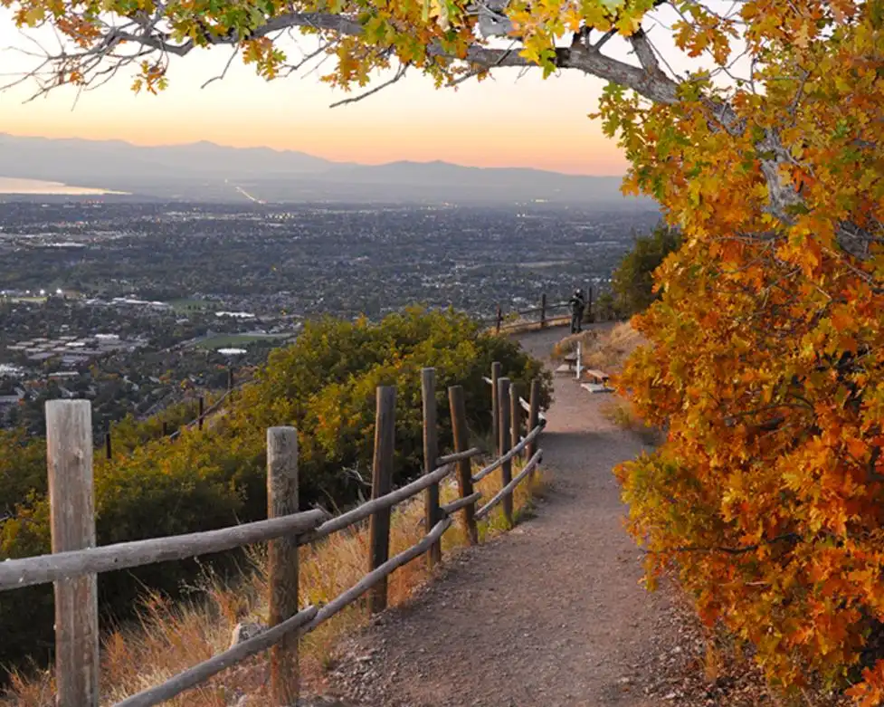
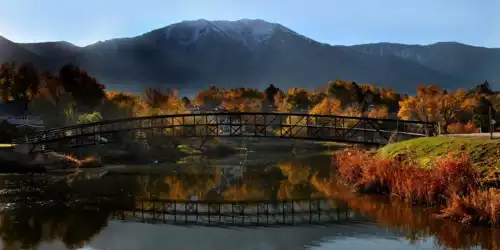
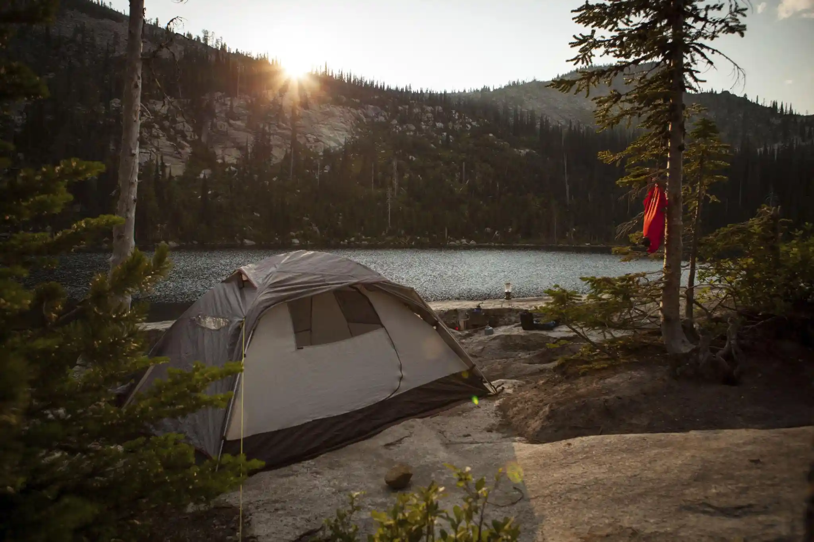
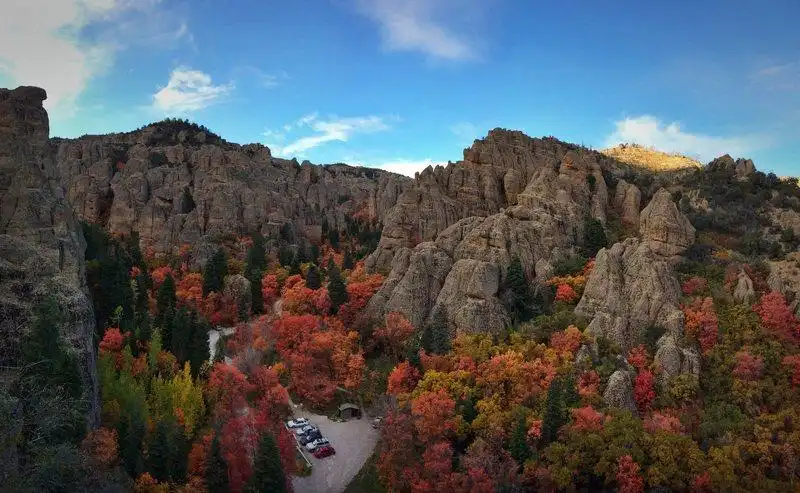

Hiking
Explore trails such as Loafer Mountain and Spanish Fork Peak.
Learn More
Discover hiking trails, scenic overlooks, and camping destinations.
Plan Your TripThis site highlights outdoor recreation opportunities near Salem Utah. From mountain trails to scenic overlooks and peaceful camping spots, there are countless ways to explore the outdoors.

Explore trails such as Loafer Mountain and Spanish Fork Peak.
Learn More
Find campgrounds like Payson Lakes and Maple Lake.
Learn More
Discover scenic drives and viewpoints across Utah Valley.
Learn More